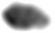

Installing the Metis Mac OS X Binary
Installing the Metis Mac OS X binary requires that the
MacPorts
version of
GMP
be installed. This can be achieved with the command sudo port
install gmp
- Download
the metis file.
- Make it executable with the command chmod +x metis
- Test it with the command ./metis --help
- If the test results in a usage message, the installation was
successful.
Installing Metis from Source
Installing Metis from source requires an installation of either
MLton,
Poly/ML
or
Moscow ML,
as well as standard system tools including GNU Make and Perl.
- Download
the metis.tar.gz file.
- Extract it with the command tar xvzf metis.tar.gz
- There will be a new directory called metis. Change to
this directory.
- To build using
MLton:
- Build with the command make mlton
- Test with the command bin/mlton/metis --help
- To build using
Poly/ML:
- Build with the command make polyml
- Test with the command bin/polyml/metis --help
- To build using
Moscow ML:
- Build with the command make mosml
- Test with the command bin/mosml/metis --help
- If the test results in a usage message, the installation was
successful.
If anything goes wrong, you can use the command make clean
to clean out any object files.
Troubleshooting
To report bugs or obtain help, please email
metis-users@gilith.com
